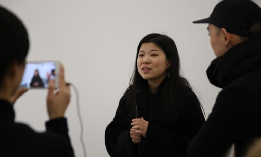
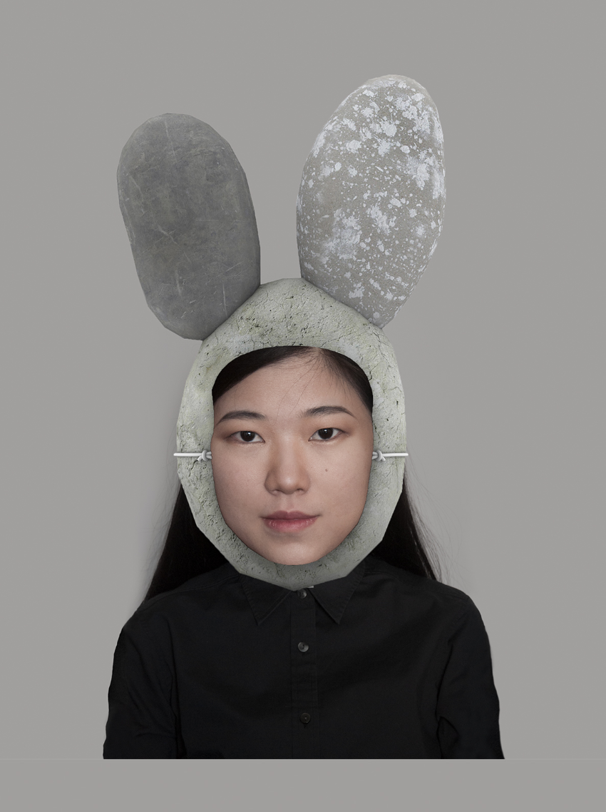
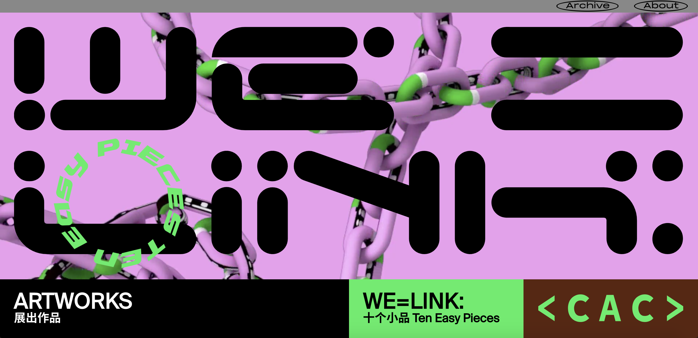

Li Weiyi is a Chinese modern and contemporary artist born in 1987. Her work has been featured in several exhibitions and museums such as the Hive Center for contemporary art in Beijing. She has been featured in articles for the China Daily and the "Ocula".


The Ongoing Moment invites users to answer the questions designed by the artist on an online test machine to collect "mood data", which will then generate a customized "mood of the moment" filter, becoming the "mood mask" for the moment. These "mood of the moment" filters may make users feel both sensible and absurd, and just as all the online test tricks, the only way to get this particular filter is to share your result to one of your social media profiles.
The Ongoing Moment piece is one of the ten pieces from the "We=Link: Ten Easy Pieces" exhibition, which is Chronus Art Center's response to the coronavirus pandemic and the global lock-down. The result is a sprawling network that heavily emphasis connectivity.
